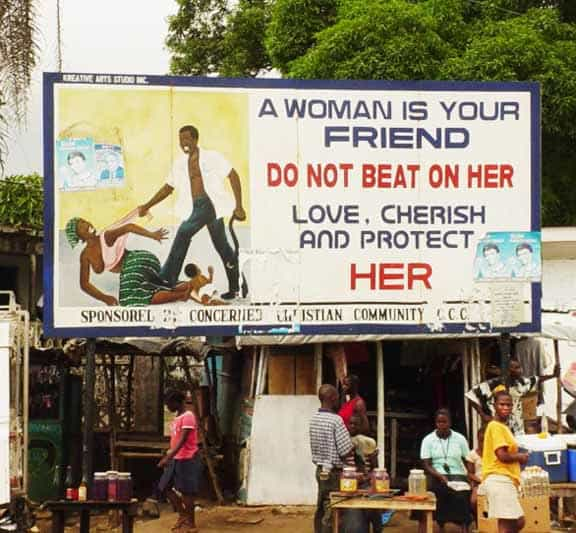
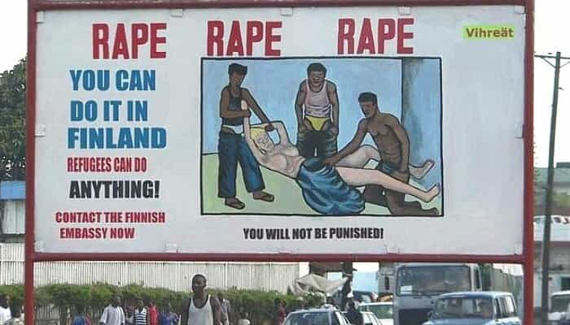

This account syndicates news from other media outlets.


Doctors in Malawi have been beaten for carrying stethoscopes by vigilante mobs who believe they are vampires using the instruments to suck blood.
Medics have also been robbed and had their vehicles smashed, while ambulances have been attacked as patients were taken to hospital, a doctors’ association said.
The Society of Medical Doctors in Malawi said a case of ‘mass hysteria’ sweeping the south of the country has led thousands of people to believe there are vampires in their midst.
Nine people have been beaten to death after being accused of being a vampire, while 124 have been arrested for carrying out the attacks.
In a statement, society president Dr Amos Salimanda Nyaka said: ‘We are disturbed by the reports of thuggery that has resulted into some health workers being attacked for carrying a stethoscope.
‘Some have had unfortunate incidences of having their vehicles smashed, and in others having their possessions taken off them for being suspected of being blood suckers, and or in pursuit of the non-existent suckers.
‘Some ambulances have also been attacked whilst being used to ferry patients to and or from hospital.
‘This is despicable and we condemn all these and all similar acts of barbarism on innocent people unreservedly and in the strongest language possible.
‘No health worker can suck blood with a stethoscope.’

Dr Nyaka added that there is ‘no evidence’ the vampires are real, and instead blamed the situation on ‘Shared Delusion Disorder’.
He said: ‘This is when a dominant individual who is deluded and can have those following him believe and internalize his delusions. Shared delusion is usually confined to a locality.
‘In view of the magnitude of the problem in that it is affecting many districts and the readiness of many Malawians to internalize these beliefs this presentation would constitute that of Mass Hysteria.
‘It is the considered view of the Society that such blood suckers do not exist. This is purely Mass Hysteria.’
The attacks started in mid-September but alarm has grown in recent weeks as they spread to Blantyre, the second-largest city in the country.
Malawi is one of the world’s poorest nations, and belief in witchcraft is widespread.

Police arrested 124 people on Friday last week after two men were beaten to death in Blantyre, accused of trying to obtain human blood for voodoo rituals.
‘One person was burned and another stoned to death by angry mobs in incidents on Thursday for being suspected to be blood suckers,’ police spokesman Ramsy Mushani said.
The latest killings took place outside Blantyre, the country’s commercial capital, where angry mobs clashed with police and blocked main roads to protest against the alleged vampire threat.
The country’s police chief said the 124 arrests had been made in a ‘coordinated operation’.
Don’t Miss: An Ugly African Woman Has Somehow Managed To Win Miss Helsinki